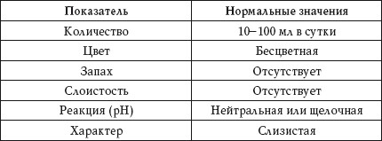

Клинический анализ мокроты включает изучение ее общих свойств и характера, а также микроскопическое исследование.
Общие свойства и характер мокроты
Нормальные свойства и характер мокроты представлены в таблице 74.
Таблица 74
Общие свойства и характер мокроты. Нормальные показатели

Количество
Повышенный показатель
Повышенное выделение мокроты наблюдается при:
• отеке легких;
• абсцессе легких;
• бронхоэктатической болезни;
Если увеличение количества мокроты связано с нагноительным процессом в органах дыхания, это является признаком ухудшения состояния больного, если с улучшением дренирования полости, то расценивается как положительный симптом.
• гангрене легкого;
• туберкулезе легких, который сопровождается распадом ткани.
Пониженный показатель
Пониженное выделение мокроты наблюдается при:
• остром бронхите;
• пневмонии;
• застойных явлениях в легких;
• приступе бронхиальной астмы (в начале приступа).
Цвет
Зеленоватый
Зеленоватый цвет мокроты наблюдается при:
• абсцессе легкого;
• бронхоэктатической болезни;
• гайморите;
• посттуберкулезных нарушениях.
Различные оттенки красного
Отделение мокроты с примесью крови наблюдается при:
• туберкулезе;
• раке легкого;
• абсцессе легкого;
• отеке легких;
• сердечной астме.
Ржавый
Ржавый цвет мокроты наблюдается при:
• очаговой, крупозной и гриппозной пневмонии;
• туберкулезе легких;
• отеке легких;
• застойных явлениях в легких.
Иногда на цвет мокроты влияет прием некоторых лекарственных препаратов. При аллергии мокрота может быть ярко-оранжевого цвета.
Желто-зеленый или грязно-зеленый
Желто-зеленый или грязно-зеленый цвет мокроты наблюдается при различной патологии легких в сочетании с желтухой.
Черноватый или сероватый
Черноватый или сероватый цвет мокроты наблюдается у курящих людей (примесь угольной пыли).
Запах
Гнилостый
Гнилостный запах мокроты наблюдается при:
• абсцессе легкого;
• гангрене легкого;
При вскрытии эхинококковой кисты мокрота приобретает своеобразный фруктовый запах.
• бронхите, осложненном гнилостной инфекцией;
• бронхоэктатической болезни;
• раке легкого, осложненном некрозом.
Слоистость
Двухслойная мокрота
Разделение гнойной мокроты на два слоя наблюдается при абсцессе легкого.
Трехслойная
Разделение гнилостной мокроты на три слоя – пенистый (верхний), серозный (средний) и гнойный (нижний) – наблюдается при гангрене легкого.
Реакция
Кислую реакцию, как правило, приобретает разложившаяся мокрота.
Характер
Густая слизистая
Выделение густой слизистой мокроты наблюдается при:
• остром и хроническом бронхите;
• астматическом бронхите;
• трахеите.
Слизисто-гнойная
Выделение слизисто-гнойной мокроты наблюдается при:
• абсцессе легкого;
• гангрене легкого;
• гнойном бронхите;
• стафилококковой пневмонии;
• бронхопневмонии.
Гнойная
Выделение гнойной мокроты наблюдается при:
• бронхоэктазах;
• абсцессе легкого;
• стафилококковой пневмонии;
• актиномикозе легких;
• гангрене легких.
Серозная и серозно-гнойная
Выделение серозной и серозно-гнойной мокроты наблюдается при:
• отеке легкого;
• абсцессе легкого.
Кровянистая
Выделение кровянистой мокроты наблюдается при:
• раке легкого;
• травме легкого;
• инфаркте легкого;
• сифилисе;
• актиномикозе.
Микроскопическое исследование
Клетки
Альвеольные макрофаги
Большое количество альвеольных микрофагов в мокроте наблюдается при хронических патологических процессах в бронхолегочной системе.
Жировые макрофаги
Наличие в мокроте жировых макрофагов (ксантомных клеток) наблюдается при:
• абсцессе легкого;
• актиномикозе легкого;
• эхинококкозе легкого.
Клетки цилиндрического мерцательного эпителия
Наличие в мокроте клеток цилиндрического мерцательного эпителия наблюдается при:
Наличие в мокроте плоского эпителия наблюдается при попадании в мокроту слюны. Этот показатель не имеет диагностического значения.
• бронхите;
• бронхиальной астме;
• трахеите;
• онкологических болезнях.
Эозинофилы
Большое количество эозинофилов в мокроте наблюдается при:
• бронхиальной астме;
• поражении легких глистами;
• инфаркте легкого;
• эозинофильной пневмонии.
Лимфоциты
Большое количество лимфоцитов в мокроте наблюдается при:
• коклюше;
• туберкулезе легких.
Волокна
Эластические
Наличие эластических волокон в мокроте наблюдается при:
• распаде ткани легкого;
• туберкулезе;
• абсцессе легкого;
• эхинококкозе;
• раке легкого.
Наличие в мокроте обызвествленных эластических волокон наблюдается при туберкулезе легких.
Коралловидные
Наличие коралловидных волокон в мокроте наблюдается при кавернозном туберкулезе.
Спирали и кристаллы
Спирали Куршмана
Наличие в мокроте спиралей Куршмана наблюдается при:
• бронхиальной астме;
• бронхите;
• опухоли легкого.
Кристаллы Шарко – Лейдена
Наличие в мокроте кристаллов Шарко -Лейдена – продуктов распада эозинофилов – наблюдается при:
• аллергии;
• бронхиальной астме;
• эозинофильных инфильтратах в легких;
• заражении легочной двуусткой.
Кристаллы холестерина
Наличие в мокроте кристаллов холестерина наблюдается при:
• абсцессе легкого;
• эхинококкозе легкого;
• новообразованиях в легких.
Кристаллы гематодина
Наличие в мокроте кристаллов гематодина наблюдается при:
• абсцессе легкого;
• гангрене легкого.